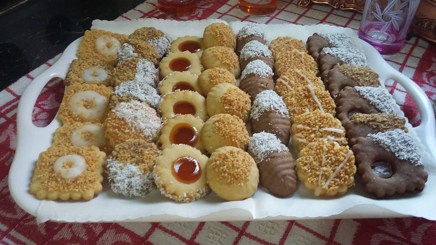
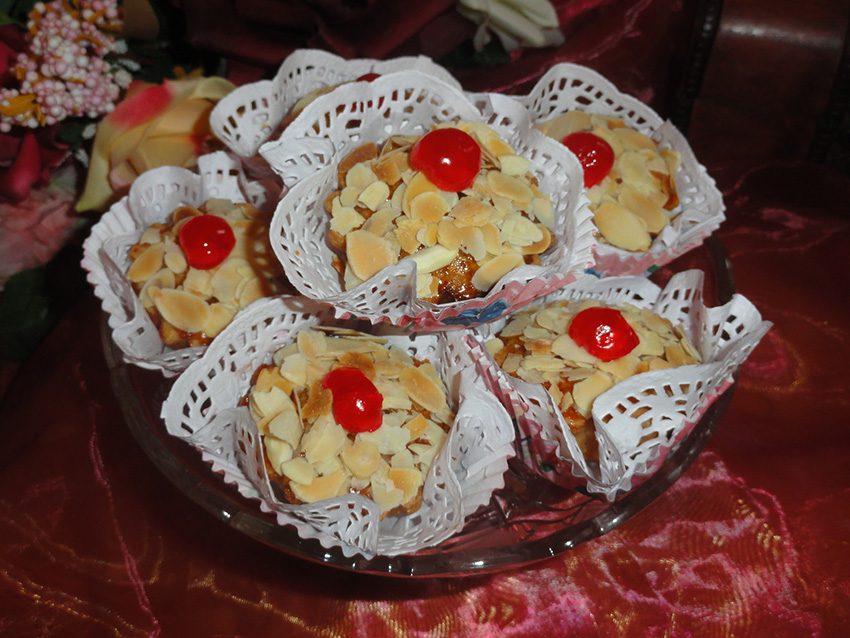
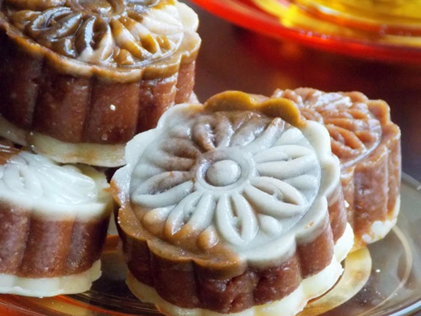
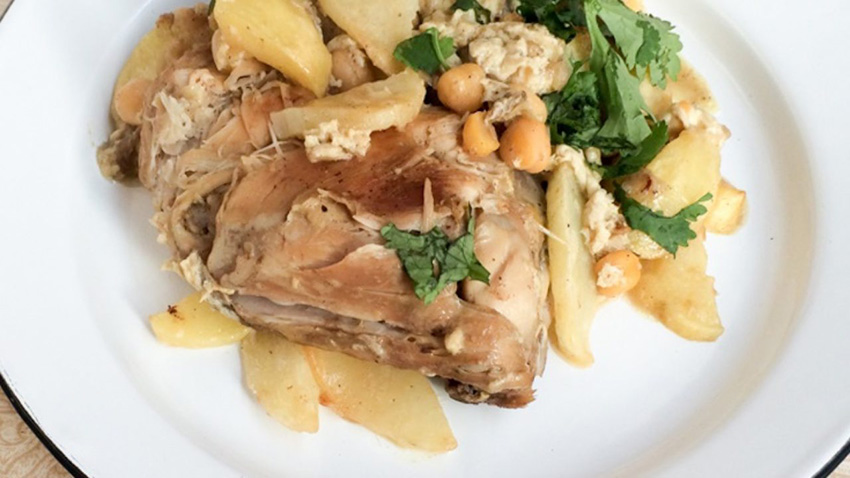

Gateaux sablés
Le sablé est un petit gâteau sec à pâte friable, rond, de diamètre variable et souvent à bord cannelé, produit à l'origine dans la ville de Sablé-sur-Sarthe. Il est réalisé à partir de farine, de beurre, de sucre et parfois de jaunes d'œufs, mélangés rapidement jusqu'à obtenir une consistance « sableuse »
Mkhabaz
Un m'khabez est une pâtisserie algérienne alliant l'amande et un glaçage au sucre. Il peut aussi se préparer à la pistache, aux noix ou aux noisettes. Le glaçage (appelé taliya dans certaines régions d'Algérie) doit être « parfait » pour donner un aspect lisse, homogène et épais. Le glaçage au blanc d'œuf peut donner ce résultat. Il peut également être coloré et décoré de perles ou fleurs en sucre. Il peut être présenté sous plusieurs formes : carré, rond, cœur ou triangle.

Amandines
Gâteau phare de la capitale algérienne avec le tcharak, le gateau amandine est une sorte de petit four en forme de petit rocher, à base de poudre d'amandes mélangée à des œufs et du sucre, parfumée au zeste de citron ou à la vanille.
Arayache
Gateau algérien, arayeche ou étoile de mer est un autre délice des gâteaux algériens traditionnels préparé pour les grandes occasions: fête de l'aïd, mariage…. C'est une spécialité algéroise qui est à l'image de toute les autres pâtisseries algériennes, un plaisir pour les yeux et pour les papilles.
Ktayef
Le ktayef est une pâtisserie feuilletée, trempée dans un sirop, réalisée à base de kadaif (cheveux d'ange), de fromage, de beurre et de pistaches ou de noix.

Qelb elouz
Qalb el louz est une pâtisserie algérienne, originaire de Constantine, à base de semoule, d'amandes, de fleur d'oranger et très fondante grâce au sirop de miel (cherbette) dont elle est abondamment arrosée. Elle est appelée aussi chamia dans l'Ouest algérien et h'rissa dans l'Est algérien.

Berkoukes
Le berkoukes, appelé aussi berkoukech, avazine ou aïch, est un plat traditionnel du Maghreb, préparé à base de pâtes en forme de gros grains de couscous, de légumes de saison et de viande.

Mtouwem
Le mtewem ou tajine mtewem est un plat algérien, et plus précisément algérois, fait à base de boulettes de viande hachée, de morceaux de poulet ou de viande d'agneau et d'amandes.

Tajine
Le tajine, c’est tout simplement un mets d’origine Berbère, les aliments, ici de l’agneau, des oignons, de l’ail et des tomates sans oublier les épices, safran, curcuma, gingembre, cannelle… mijotent à feu doux, idéalement à l’étouffée et à la vapeur, jusqu’à obtenir une viande moelleuse et fondante.

Tlitli
Le tlitli est un plat traditionnel algérien, originaire de l'est du pays, à base de pâtes traditionnelles qui ressemblent aux pâtes dites « langues d'oiseaux ».

Douara
Il s'agit d'une sorte de ratatouille ou poêlée de poivrons ou de piments verts ou rouges, tomates, oignons et à laquelle s'ajoutent à la fin des œufs. Ce plat est la base de légumes cuits dans l'huile d'olive.
Hrira
La harira (en arabe : حريرة, ḥrīrah, également appelée bufertuna à Rabat) est une soupe traditionnelle du Maroc et de l'ouest de l'Algérie d'origine andalouse. Elle est constituée de tomates, de légumes, de viande et d'oignon.